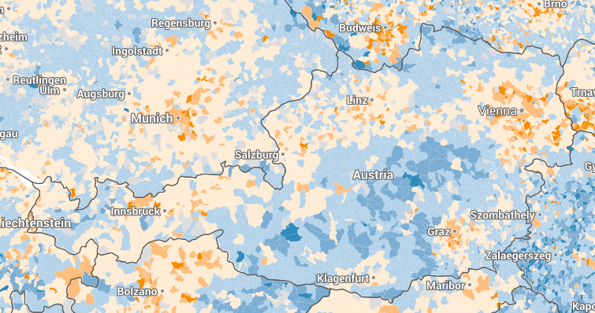

Österreich wird in den kommenden Jahren um jährlich rund 60.000 Personen wachsen. "Grund dafür ist vor allem die Migration", sagte der Generaldirektor der Statistik Austria, Konrad Pesendorfer, anlässlich der Präsentation der Bevölkerungsstatistik von 2015 bis 2060. 2022 wird Österreich voraussichtlich die Neun-Millionen-Einwohner-Grenze durchbrechen.
Mit: Michael Matzenberger, DER STANDARD
Live-Beantwortung bis 14:00 Uhr
Frage von User 500
Wachstum, Wachstum, Wachstum Ab wann wirds denn in Aut wirklich eng? 9Mio, 10Mio? Mit oder ohne Integration und Werteblabla - eine ständig steigende Bevölkerungszahl wird uns so dermasen auf den Kopf fallen, da braucht keiner Angst haben wegen Pensionen oder ähnlichen!
Antwort von Michael Matzenberger
"Eng" wird es noch länger nicht - wir dürfen nicht vergessen, dass die meisten ländlichen Gemeinden schrumpfen, nicht wachsen: Platz wird vor allem in Städten gebraucht
Für die von Ihnen angesprochenen Pensionen ist die Zuwanderung sogar ein Vorteil: momentan ein einer Projektion ohne Wanderungen schrumpft Österreich bis 2050 auf 7,8 Millionen Einwohner, wobei 35% über 65 sind.
Die Hauptvariante und die Variante mit höherer Wanderung lassen eine Bevölkerung von 9,6 bzw 9,8 Millionen Einwohnern erkennen, wobei "nur" 27 % der Einwohner über 65 sind.
Dies würde es einfacher machen, das Pensionssystem wie bisher bestehen zu lassen
Frage von hansi
auf welchen Flächen wollen wir diese Menschen im bereits überbevölkerten Europa unterbringen? Allein Österreich müsste nun jährlich eine Stadt wie Linz auf die grüne Wiese stellen. Dabei verbauen wir jetzt schon Grünflächen im Ausmaß von 30 Fußbaldfeldern täglich. Wollen wir nun unsere letzten Naturräume zerstören??? Auch landwirtschaftliche Flächen brauchen wir für unsere Ernährungssicherhit!
Antwort von Michael Matzenberger
"Eng" wird es noch länger nicht - wir dürfen nicht vergessen, dass die meisten ländlichen Gemeinden schrumpfen, nicht wachsen: Platz wird vor allem in Städten gebraucht
Von 1991 bis 2011 haben von den 2.500 Gemeinden in Österreich 838 Bevölkerung verloren.
Die Hauptvariante und die Variante mit höherer Wanderung lassen eine Bevölkerung von 9,6 bzw 9,8 Millionen Einwohnern erkennen, wobei "nur" 27 % der Einwohner über 65 sind.
Dies würde es einfacher machen, das Pensionssystem wie bisher bestehen zu lassen
Diese Karte zeigt in blau alle geschrumpften Gemeinden seit 1991:

Nachfrage von Michael Fleischhacker
Aus den zitierten Gemeinden sind wohl nur einige wenige Junge weggezogen. Wie viele waren es wirklich?
Antwort von Michael Matzenberger
insgesamt sind 132.294 Bewohner aus ihnen weg gezogen. Alleine in diesen 800 Gemeinden gibt es also wohl Platz für etwa 130.000 Personen mehr, als jetzt in ihnen leben.
Frage von hansi
Die Bevölkerung wächst und damit die sozialen Spannungen. Im Jahr 2060 werden noch mehr Berufe als jetzt schon durch Computer und Maschinen wegrationalisiert worden sein, was sollen diese Menschen dann arbeiten?
Frage von Hinterfrager
wieso nicht gleich Prognose für 2500? Das ist ja wohl ein Humbug. Lebenserwartung und Geburtenrate nach den Trends der letzten Jahre fortzuschreiben geht ja noch, da könnte es aber auch Überraschungen geben. Aber die Zuwanderung .... wie sollte die irgendjemand auch nur annähernd für die nächsten 45 Jahre abschätzen? Haben die vor 3 Jahren gewusst, dass heuer an die 100000 Asylwerber kommen? Und werden das nächstes Jahr noch mehr oder gibt es Frieden in Syrien und viele kehren zurück. Und welche Migrationsströme haben die z.B. für 2042 angenommen? Bitte um Auskunft!